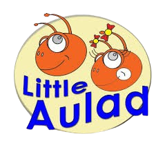
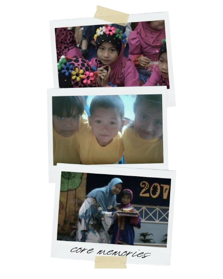
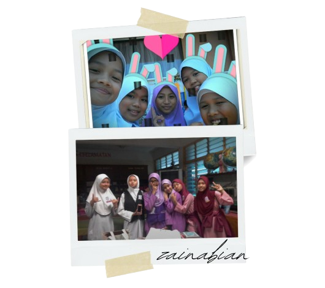
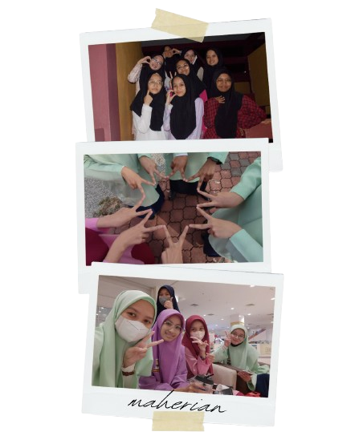
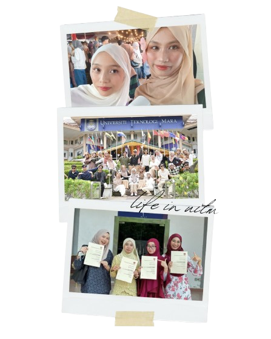

| About |
Location |
Memories |

Little Aulad Playschool
It is a private preschool education is an early childhood education stage managed by private institutions. It focuses on developing basic skills such as reading, writing, and counting, as well as social and personal development. The learning environment is usually structured and interactive, using creative teaching methods to support children’s early growth and interest in learning.
|
|
 |
Sekolah Kebangsaan Zainab 2
Sekolah Kebangsaan Zainab 2, Kota Bharu, is an all-girls primary school, where I received my primary education. I was a student in the school, and I know I enjoyed a conducive and supportive atmosphere that helped me develop both in my academics as well as in other ways. I was also encouraged by the all-girls environment in the school, which helped me to develop friendships.
- Year of Study: 2012-2017
- Education Level: UPSR and UPKK
- Position Held: Pembimbing Rakan Sebaya (PRS)
|
|
 |
Sekolah Menengah Kebangsaan Dato Ahmad Maher
It is a secondary school known for its strong focus on Public Speaking, Excel Maths, ICT, and Gamelan. The school encourages students to develop both academic excellence and communication skills, while also appreciating cultural arts. At first, I initially felt a bit awkward adjusting to the environment because I came from an all-girls school. However, over time, I became more comfortable and confident.
- Year of Study: 2018-2022
- Education Level: SPM
- Position Held: Pembimbing Rakan Sebaya (PRS)
|
|
 |
Universiti Teknologi MARA (UiTM) Cawangan Kelantan
I am currently learning fundamental skills related to information organization, digital content management, and basic website development. Here, I learn to develop both technical knowledge and practical skills that are essential for managing information in the digital era.
- Programme: Diploma in Information Management
- Year of Study: September 2023 - February 2026
- Position Held: Secretary of UiTM Click Club (Photography Club)
- Current Status: Ongoing
|
|
 |